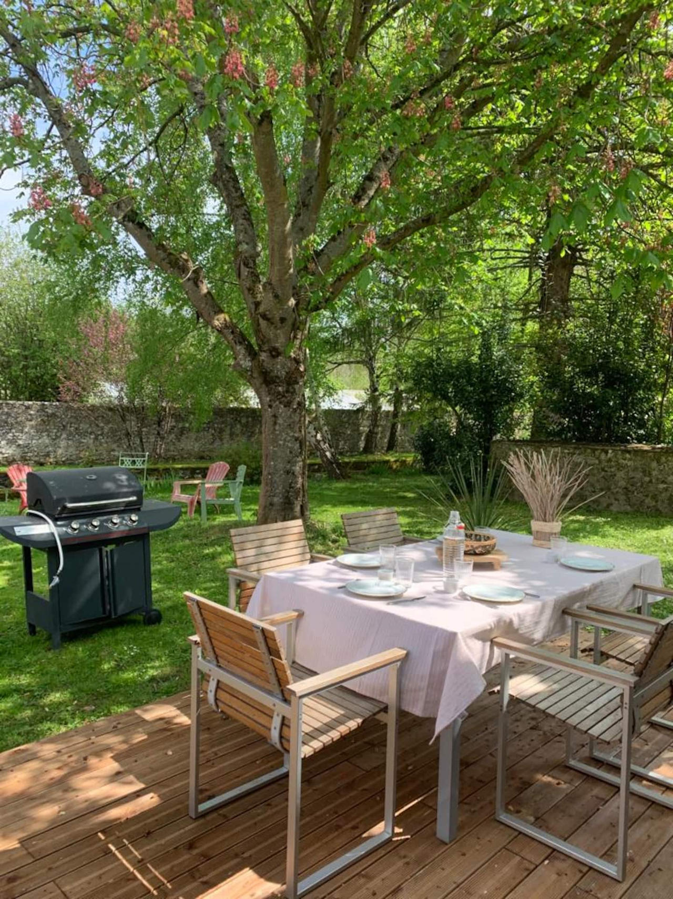
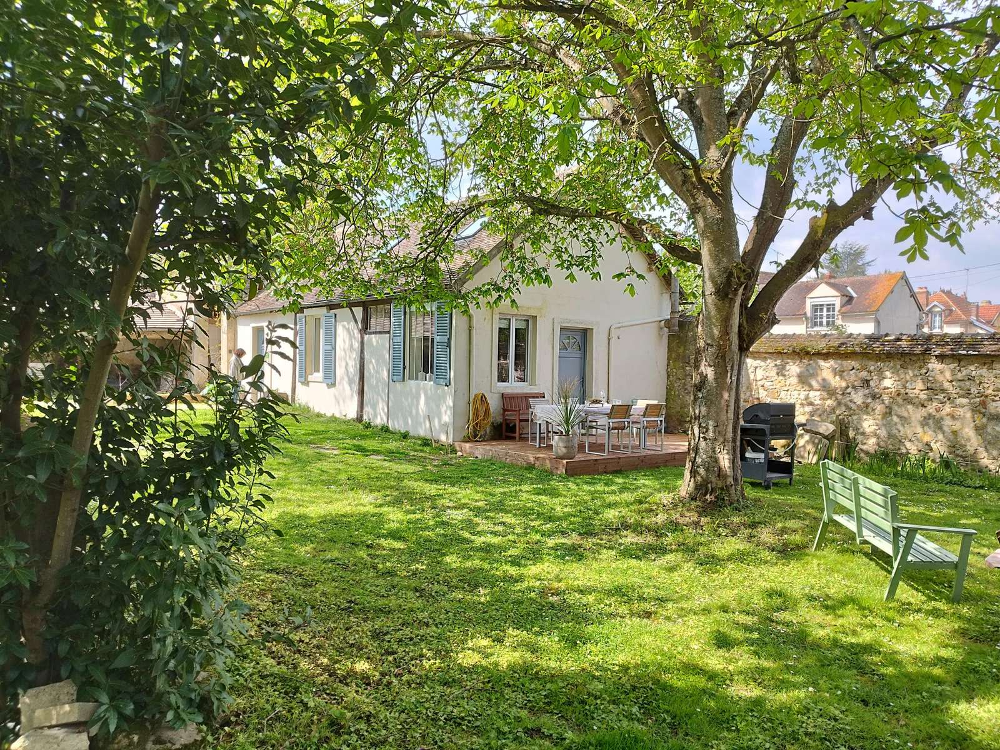
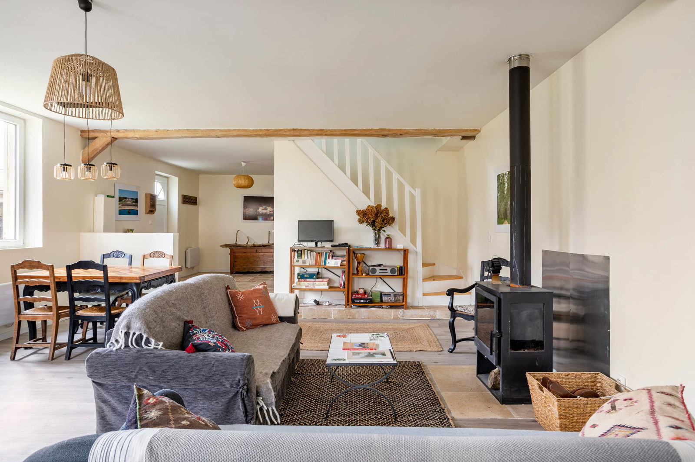
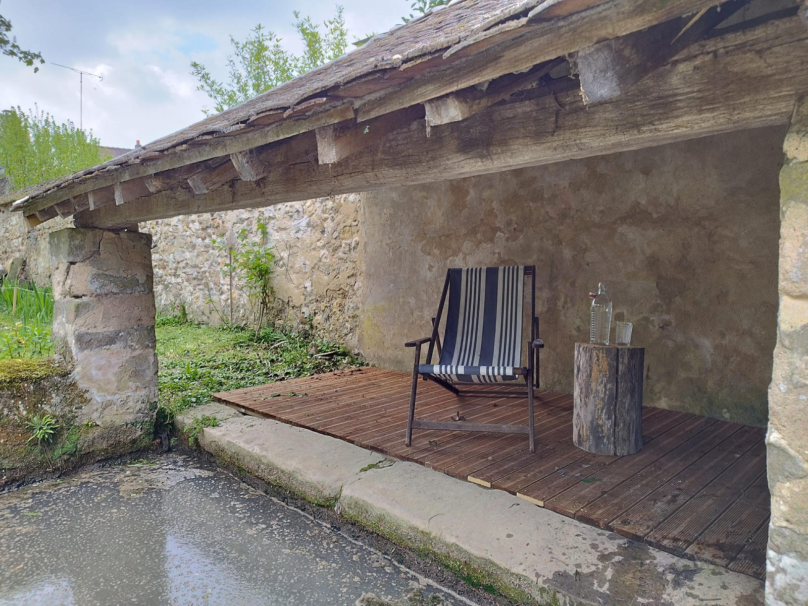
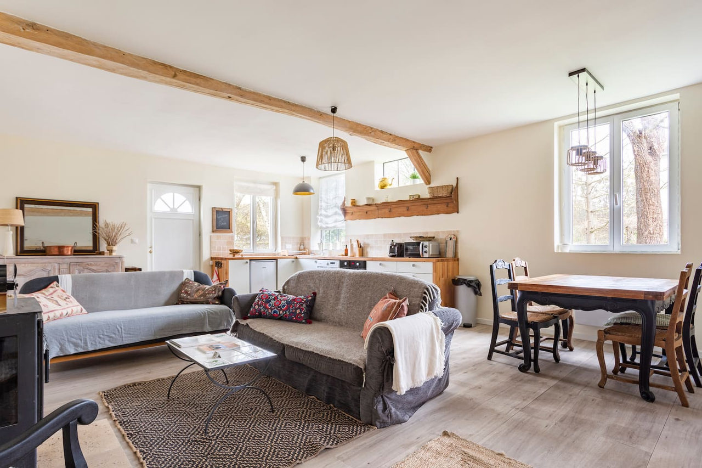
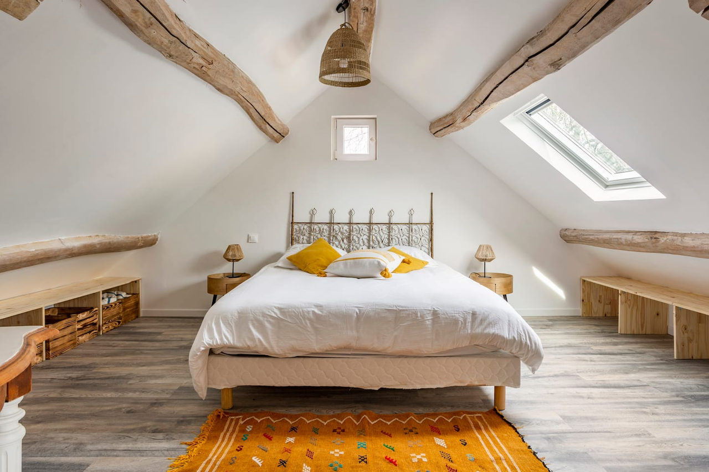
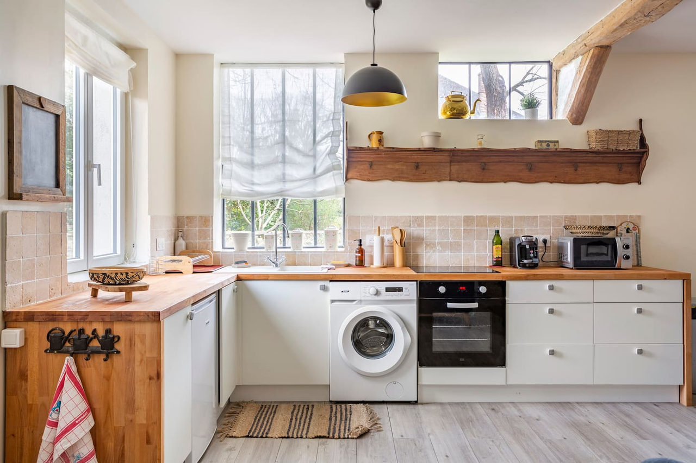
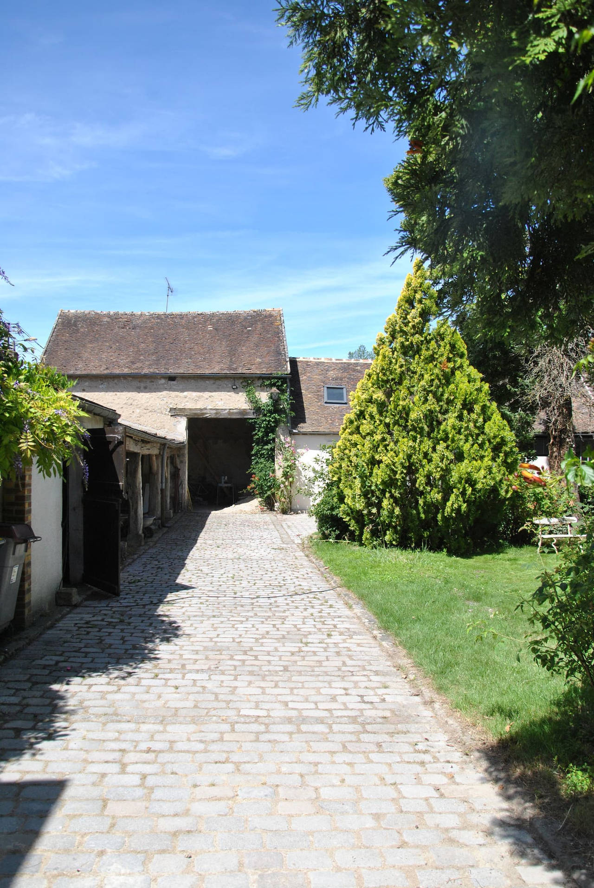
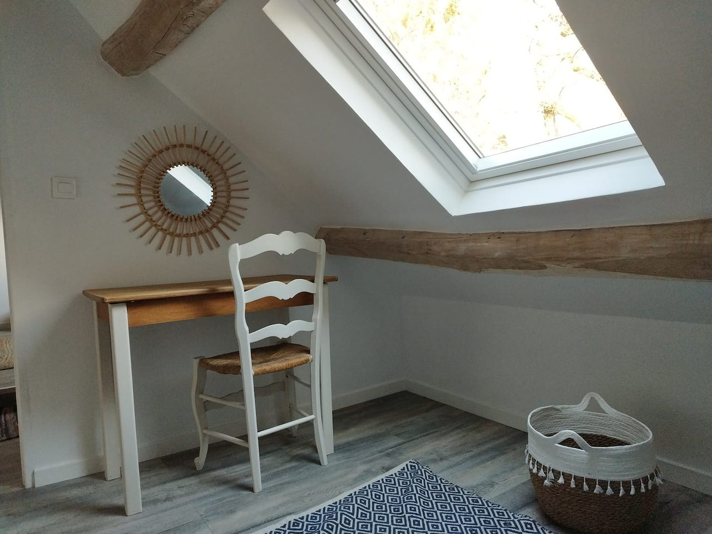

En famille
Des jeux de jardin, des livres, des jeux de société et un lit parapluie pour les plus petits.



Une maison couleur miel pour 6 personnes, son jardin, son ruisseau et son ancien lavoir, à Flagy : à 30 minutes de Fontainebleau et 1 h 30 de Paris.



À Flagy, dans un village de caractère, la maison aux couleurs miel est un cocon de confort avec son poêle à bois. Elle vous est réservée en entier, avec le jardin qui l’entoure.
Dehors, 500 m² de jardin où les méandres du ruisseau mènent à un long bassin ombragé, puis à l’intimité d’un ancien lavoir.

Des jeux de jardin, des livres, des jeux de société et un lit parapluie pour les plus petits.
Un week-end au coin du poêle, des repas sur la terrasse et le barbecue sous les arbres.

Les animaux sont les bienvenus : le jardin est fermé par un muret.

Le wifi, un espace de travail et le calme du village, pour quelques jours ou plus.
La maison se loue en entier, jusqu’à 6 voyageurs. Choisissez vos dates sur le planning : le prix exact s’affiche aussitôt, ménage compris. Les dates déjà prises sont grisées.
Frédéric accueille les voyageurs à Baia et leur répond lui-même. Sur Airbnb, ses 133 avis lui donnent 4,80 sur 5 : la meilleure note va à la communication.
Choisissez vos dates : Frédéric vous répond lui-même.
Réservez en ligne avec le planning, ou posez votre question : la réponse arrive vite.
Jusqu’à 6 personnes, dans 3 chambres : deux chambres avec un grand lit (celui de la chambre 1 se sépare en deux lits simples) et une chambre avec deux lits simples sous la charpente. Un canapé-lit dans le séjour complète les couchages. Toute la maison et le jardin vous sont réservés.
En ligne, avec le bouton « Réserver » : vous choisissez vos dates sur le planning, le prix du séjour s’affiche aussitôt, ménage compris. Vous pouvez aussi appeler Frédéric au 06 95 68 81 78. Le séjour minimum est de 2 nuits.
90 € la nuit en semaine hors vacances scolaires, 140 € la nuit du vendredi et du samedi. Pendant les vacances scolaires, toutes les nuits sont à 140 €. Le ménage de fin de séjour est de 50 €.
Oui, les animaux sont acceptés. Le jardin est entouré d’un muret. Signalez simplement votre compagnon dans votre demande.
Le ruisseau, le bassin et le lavoir sont en accès libre dans le jardin : les enfants doivent rester sous la surveillance de leurs parents.
Oui : le train depuis Paris jusqu’à Montereau est accessible avec le pass Navigo. La gare est à 15 minutes en voiture de la maison.
Non, les fêtes et les soirées ne sont pas autorisées et la maison est non-fumeur. Flagy est un village calme : c’est aussi ce que viennent chercher les voyageurs.